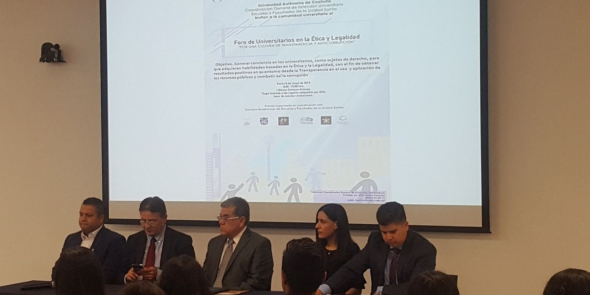
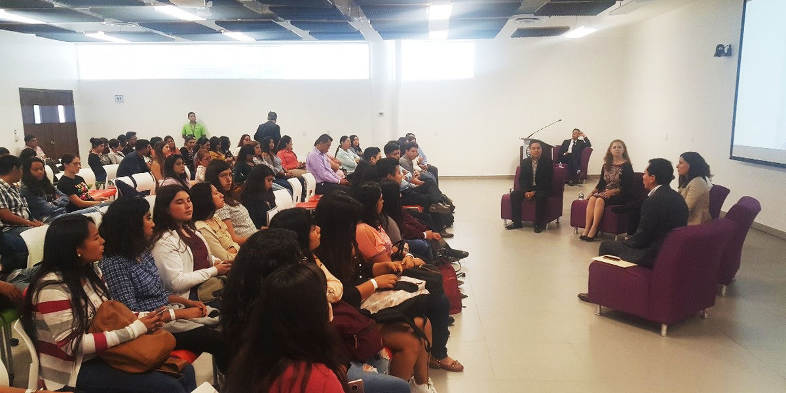
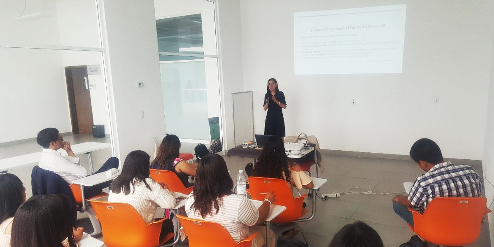

En busca de crear conciencia en los jóvenes sobre la importancia de no caer en actos de corrupción, la Universidad Autónoma de Coahuila a través de la Coordinación General de Extensión Universitaria, Escuelas y Facultades de la Unidad Saltillo, llevaron a cabo el Foro de Universitarios en la Ética y Legalidad 2019.
El objetivo fue brindar a los universitarios las herramientas y habilidades basadas en la ética y la legalidad, con el fin de obtener resultados positivos en su entorno desde la transparencia en el uso y aplicación de los recursos públicos y combatir la corrupción.
El evento tuvo lugar en la Sala de Videoconferencia de la Infoteca Campus Arteaga, donde se contó con la presencia del Rector, Salvador Hernández Vélez, del Coordinador General de Extensión Universitaria, José María González Lara, del Subcoordinador de Desarrollo Comunitario, Octavio Emmanuel Delgado Orozco, además de la Consejera de Participación Ciudadana, Jafia Pacheco Valtierra y del Subcoordinador de Servicios de Extensión de la UA de C, Juan Jesús de Labra Vanegas.
La consejera Jafia Pacheco tuvo una intervención informando a los estudiantes como a través de una democracia participativa pueden intervenir en la toma de decisiones de su país impulsando un estilo de vida con base en la ética y legalidad.



